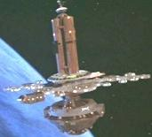

|
|
Complesso orbitale terrestre |
|
|||
|  |
Stazione spaziale in orbita attorno alla Terra, che è parte del
cantiere navale San Francisco. L'ammiraglio
Kirk è stato
teletrasportato nel complesso orbitale prima di raggiungere
l'Enterprise in manutenzione.